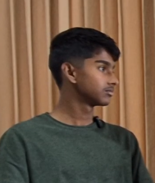

Your one-stop hub for analytical blogs and expert podcasts that uncover the truth behind environmental myths.
What We Do
Eco-Mythbusters Roundtable is a digital hub combining a myth-busting blog series with a roundtable podcast series. Each blog post breaks down a common sustainability myth — and each podcast episode builds on that blog by featuring roundtable discussions with peers, local voices, and professionals, ranging from environmental scientists and NGO workers to tech innovators and policymakers.
Our Purpose
To help young people and communities make smarter sustainability choices by debunking eco-myths, while amplifying professional and community voices that connect environmental issues to real-world challenges and solutions.
Why this matters: Environmental information is often clouded by myths, half-truths, and trend-driven claims. This platform is an effort to move from noise to expert-driven nuance.
The Creator

Hi! I'm Ritayush Suchismita Dey, a 16-year-old high school student and developer from India. I've been programming for over 6 years and have built more than 100 projects throughout my learning journey.
Beyond technology, I have a strong interest in environmental sustainability and in uncovering the truths behind commonly accepted narratives. I believe meaningful change begins with accurate information, critical thinking, open discussion, and expertise.